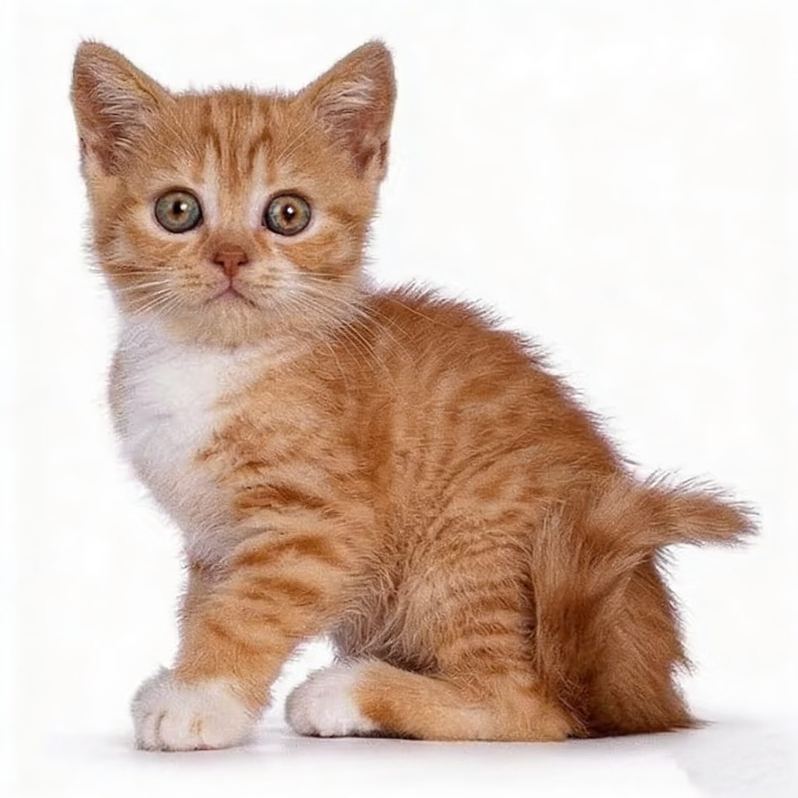

我的文明养宠指数
-
评级加载中...
文明分由基础分、奖励分和违规扣分组成。保持良好的养宠习惯，您的分数将不断提升！

分数构成
扣分明细
评分规则
- 基础分 (100分)： 所有注册用户初始默认拥有100分。
- 奖励分： 完善宠物疫苗信息 (+10)、获得社区表彰 (+20) 等。
- 违规扣分： 未牵绳 (-5)、未清理粪便 (-10)、扰民 (-5) 等。
文明分由基础分、奖励分和违规扣分组成。保持良好的养宠习惯，您的分数将不断提升！
